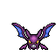
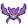

Pokédex / #169

Crobat #169
PoisonFlying
The development of wings on its legs enables it to fly fast but also makes it tough to stop and rest.
Generation 2 · Johto

Stats
| Attack | 90 | |
|---|---|---|
| Defense | 80 | |
| Sp. Atk | 70 | |
| Sp. Def | 80 |
In the wild
| Wild level | 85–95 |
|---|---|
| HP | 85 |
| Experience | 15 |
| Egg groups | Flying |
Evolution
- Evolves from Golbat at level 50, with a Soothe Bell.
Moves
| Level | Move | Type | Category | Power | Energy | Cooldown | Effect | |
|---|---|---|---|---|---|---|---|---|
| 1 | Tackle | Normal | Physical | 15 | 15 | 1s | Tackle is one of the most common and basic moves a Pokemon learns. It deals damage with no additional effects. | |
| 5 | Giga Drain | Grass | Special | 75 | 95 | 12s | Giga Drain deals damage and the user will recover 50% of the HP drained. | |
| 10 | Bite | Dark | Physical | 60 | 60 | 9s | Bite deals damage and has a 30% chance of causing the target to flinch. | |
| 15 | Swift | Normal | Special | 60 | 60 | 9s | Swift deals damage and ignores changes to the Accuracy and Evasion stats. | |
| 20 | Wing Attack | Flying | Physical | 60 | 70 | 14s | Wing Attack inflicts damage and has no secondary effect. | |
| 25 | Supersonic | Normal | Status | – | 20 | 14s | Supersonic causes the target to become confused. | |
| 30 | Poison Fang | Poison | Physical | 50 | 55 | 8s | Poison Fang inflicts damage and has a 30% chance of badly poisoning the target. | |
| 40 | Air Cutter | Flying | Special | 60 | 70 | 13s | Air Cutter deals damage and has an increased critical hit ratio. | |
| 45 | Air Slash | Flying | Special | 75 | 80 | 17s | Air Slash deals damage and has a 30% chance of causing the target to flinch. | |
| 55 | Venoshock | Poison | Special | 65 | 75 | 16s | Venoshock inflicts damage and its power will double to 130 when the target is poisoned. | |
| 60 | Screech | Normal | Status | – | 100 | 35s | Screech lowers the target's Defense by two stages. | |
| 65 | Cross Poison | Poison | Physical | 70 | 70 | 15s | Cross Poison deals damage and has a 10% chance of poisoning the target. It also has an increased critical hit ratio. | |
| 70 | Acrobatics | Flying | Physical | 55 | 55 | 13s | Acrobatics deals damage and has no secondary effect. | |
| 75 | Haze | Ice | Status | – | 100 | 120s | Resets all stat changes. |
Field abilities
FindFly
Special abilities
Inner Focus
Egg moves
Brave BirdCurseDefogFaint AttackGiga DrainGustHypnosisNasty PlotPursuitQuick AttackSteel WingVenom DrenchWhirlwindZen Headbutt
Technical machines
Aerial AceBideDouble EdgeDouble TeamGiga DrainHyper BeamMimicRageRain DanceRestShadow BallSludge BombSoftboiledSteel WingSubstituteSwiftTauntToxic
Drops
| Item | Amount | Chance | |
|---|---|---|---|
| bottle of poison | 1–18 | 100% | |
| bat wing | 1 | 80% | |
| tooth | 1–3 | 66.7% | |
| venom pendant | 1–3 | 60% | |
| cutting fang | 1 | 24% | |
 | crobat doll | 1 | 0.1% |
| Sky Plate | 1 | 0.05% | |
| Toxic Plate | 1 | 0.05% | |
| Soothe Bell | 1 | 0.02% | |
| TM 36 | 1 | 0.01% | |
| held poison barb | 1 | 0.01% | |
| held sharp beak | 1 | 0.01% |